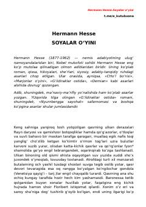

SOQasrda yashovchi shoir va go'zal Agnes xonimning taqdiriga oid falsafiy qissa.
Hermann Hessening ushbu asari qasrda yolg'izlikda yashovchi shoir Floribert va go'zal Agnes xonim o'rtasidagi murakkab munosabatlar haqida hikoya qiladi. Asar inson ruhiyati, yolg'izlik va hayotning o'tkinchi lahzalari ustida mushohada yuritadi.